"Step into the boots of a short, big-footed pirate in a world of high-stakes adventure. Leap, sprint, and battle your way uncharted lands, surviving deadly perils as you race against your nemesis to uncover the Cerulean treasure."
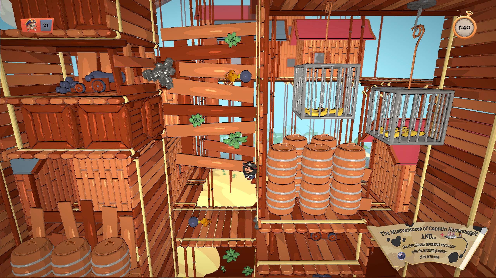
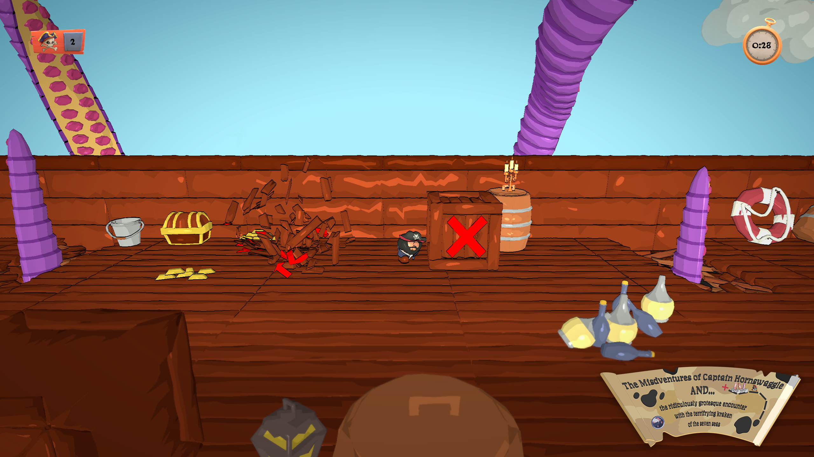
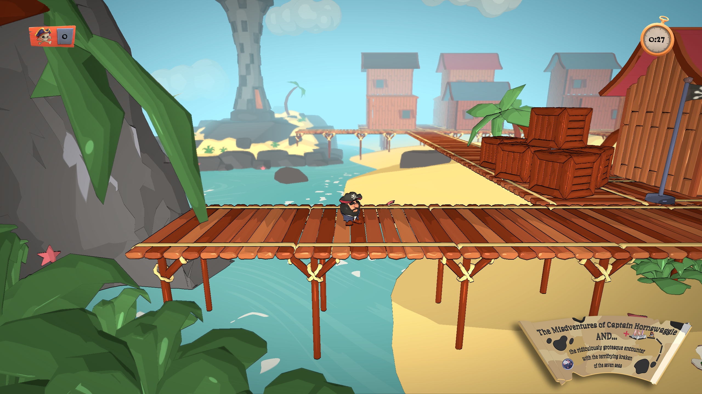
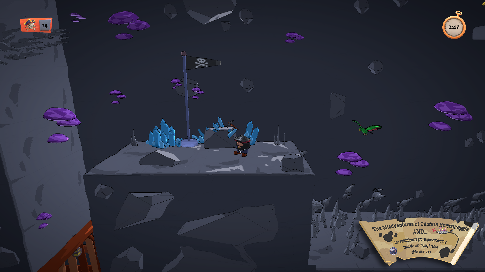
Specifications:
- Engine: TGE (Custom DX11)
- Platform: PC
- My Role: Technical Art, Animation
This was the first group project developed using a custom engine.
The game is a 2.5D platformer featuring four distinct levels, each introducing unique obstacles and gameplay
challenges.
My responsibilities included creating shaders, flipbook VFX, character rigs, and animations. This project marked
both my first experience working with a custom engine and my introduction to HLSL.
My primary contribution to this project was a cel shader master material. The team aimed for a highly stylized,
cartoon-like visual direction, featuring cel shading, outlines, exaggerated animations, disproportionate
character models, and vibrant environments.
The shader was developed in collaboration with a fellow technical artist,
Efrem Torrisi.
The implementation involved modifying DirectionalLight data, quantizing the lighting values, and
remapping them to achieve distinct shading bands based on visual references. A sharp specular highlight was
later introduced to further enhance the stylized appearance.
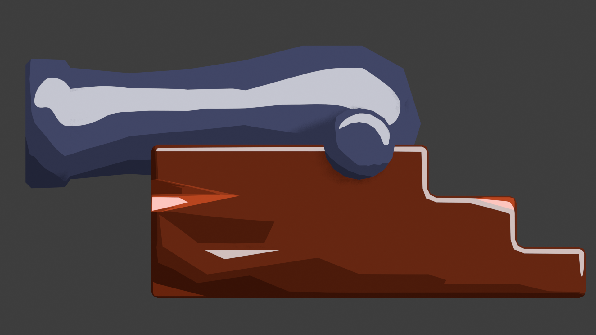
Cel shading reference from blender
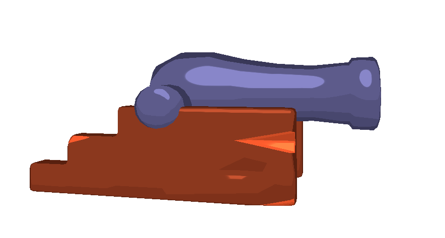
Early iteration of cel shader in model viewer
I was responsible for creating rigs and animations for both the main player character and a parrot enemy. All rigs and animations were created in Blender. To match the exaggerated, cartoon-like style of the game, squash-and-stretch techniques were heavily used throughout the animation process.
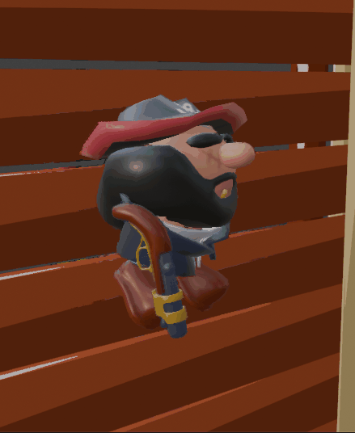
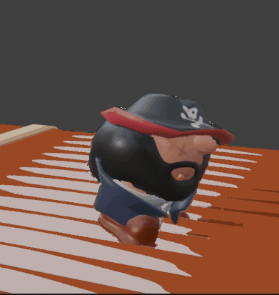
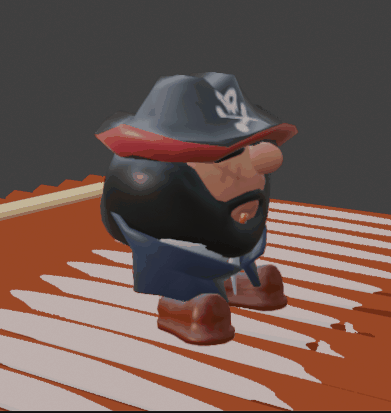
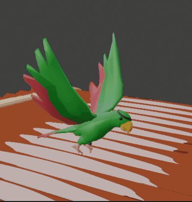
Background Fog was implemented using world-space position to soften the transition between the edge of
the water plane and the background.
Death VFX for the player character was created using Unreal Engine's Niagara particle system. Each
particle was an FBX mesh generated from metaballs in Blender and shaded to match the in-game cel
shading style. Particles were emitted using the vertex positions of a skull mesh. The resulting effect was baked
into a flipbook and played back in the game using a flipbook system.
Water Shader was created using a combination of different types of procedural noise to generate the
base pattern. Additional surface foam was achieved using finer noise overlays. The shader was applied to a
subdivided plane, with vertex displacement used to introduce subtle wave motion.
Crate Destruction Simulation was created using Houdini. A crate mesh was imported and
fractured using material fracture tools, then simulated with an RBD Bullet solver. Bones were generated at the
pivot points of each fractured piece, and the result was exported. Final cleanup, bone assignment, and animation
adjustments were completed in Blender before importing the rigged asset into the engine.

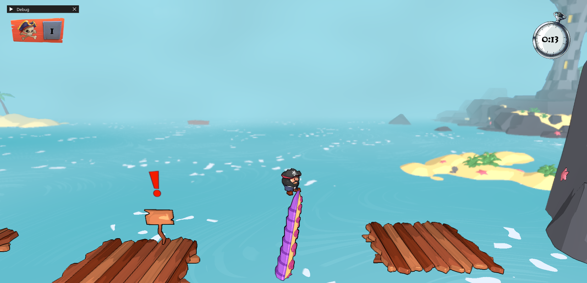